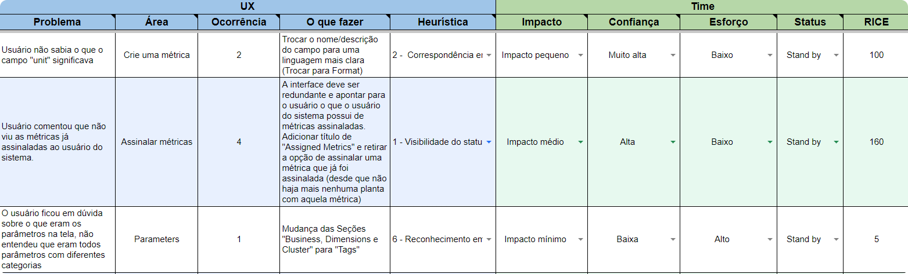
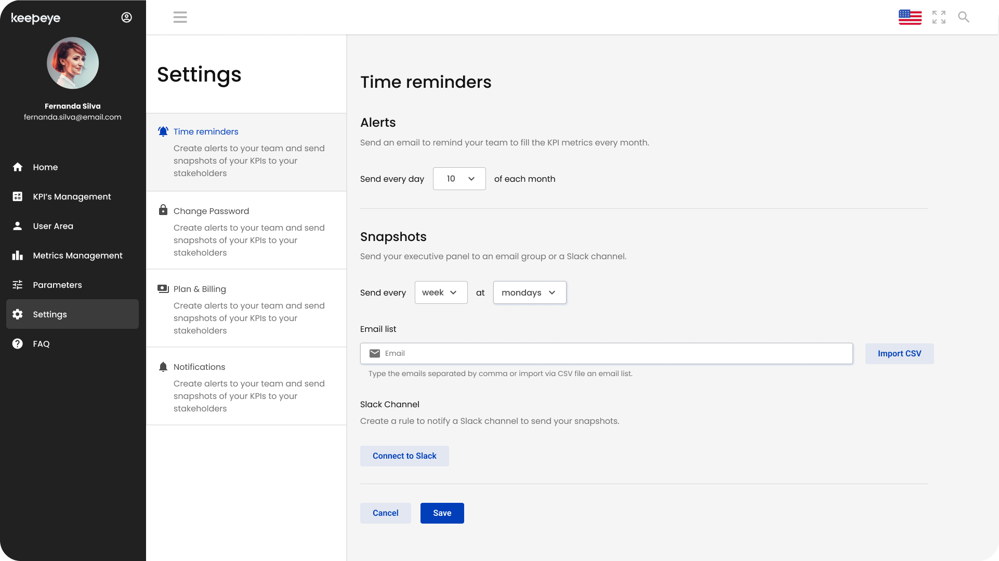
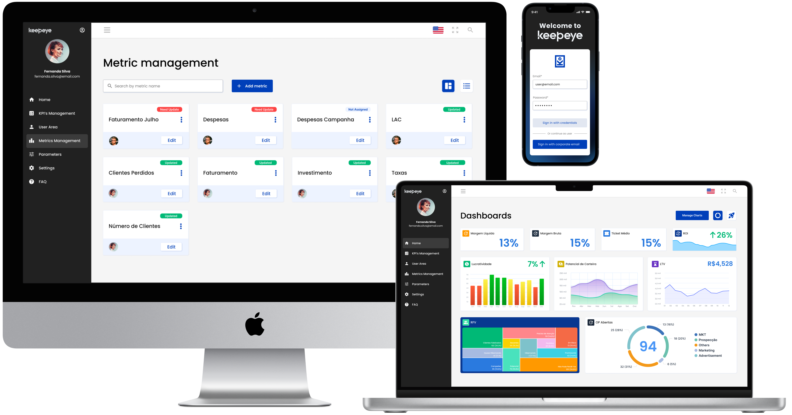
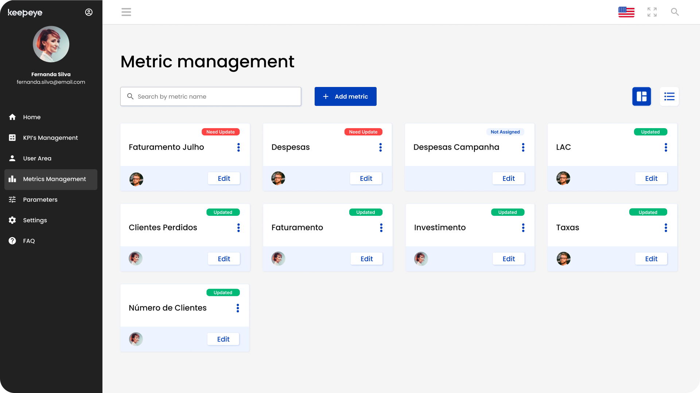

Keepeye: KPI Management Platform
Dojo had spent years building software for other companies, Keepeye was the first time we built one of our own. I worked design and front-end across a four-person team, taking a KPI management SaaS from competitive research through a usability-tested, production-ready UI.
Overview
Dojo's work had always been client projects. Keepeye changed that: an internally-owned KPI management tool for managers and teams, built from an early concept into a market-ready SaaS product. I worked as both UX designer and front-end developer on a four-person team, myself, another UX engineer, and two full-stack developers.
The Problem
We'd built something similar once before, but only as a one-off for a single client, scoped to their needs, not shaped for a market. Turning it into a real product meant confronting questions that project had never forced us to answer: who else actually needs this, what do the tools already on the market do well, and which usability gaps in our own concept had simply never surfaced because only one company had ever used it.
Research & Discovery
Before redesigning anything, I led a competitive analysis of existing KPI-tracking tools (including their market share in Brazil), to understand what the space already solved well and where Keepeye could differentiate.
I also treated our prior version as research material: interviews and usability tests with managers across multiple industries, focused on how they tracked KPIs today. A consistent pattern emerged, most companies had only a loose grasp of KPI tracking and needed real hand-holding to get started, which told us how much onboarding and guidance the product itself would have to carry.
Every usability issue and improvement idea that surfaced went into a RICE matrix (Reach, Impact, Confidence, Effort), so the team could prioritize the backlog by score instead of by opinion.

Iterative Design
With priorities set, I mapped the information architecture, how information would flow, how users would move between pages, and which features made the MVP cut versus a later release.
From there, medium-fidelity prototypes covered the core account surfaces: reminders, plan & billing, notifications, and user/role management, enough fidelity to confirm each page's content and align with the development team before any visual design was locked in.



Once that structure was validated, I designed the high-fidelity screens (sign-in, the KPI dashboard, metric management, and settings), layering in color, type, copy, error states, and interaction detail.





In parallel, I built a library of reusable components rather than one-off screens, with documentation covering each component's usage and quirks, working in person with the team made that process fast, and left something the team could keep building on after handoff.
Testing & Solution
With every page coded, we tested the MVP against a written script rather than an open-ended walkthrough: a planned user journey broken into discrete tasks, run with real users, with a short questionnaire after each task.
The test was built to answer specific questions (was the product intuitive, was the interface appealing, and where exactly did people get confused), plus a closing set of questions on consistency, feedback mechanisms, aesthetics, accessibility, and security.
That structure meant we shipped an MVP built for a real feedback loop, not just a one-time check: the same script and metrics could be rerun as the product evolved.
Impact & Learnings
- The first version held up well against the metrics we'd set for the usability test, with only minor changes needed afterward and consistently high user satisfaction.
- Because this was our first MVP, we over-invested in polish before validating, a timing mistake worth naming: the earlier a product gets in front of real users, the cheaper every course-correction is.
- Working closely with another UI/UX designer, after years of designing solo, turned out to be one of the most valuable parts of the project, a second perspective to argue with, borrow from, and get feedback from in real time.
Key takeaway: The gap between “works for one client” and “works as a product” is exactly the gap this project closed. Competitive research told us where the market already was; RICE-scored usability findings across multiple industries told us which fixes actually mattered. Without both, we'd have kept polishing a tool built for an audience of one.